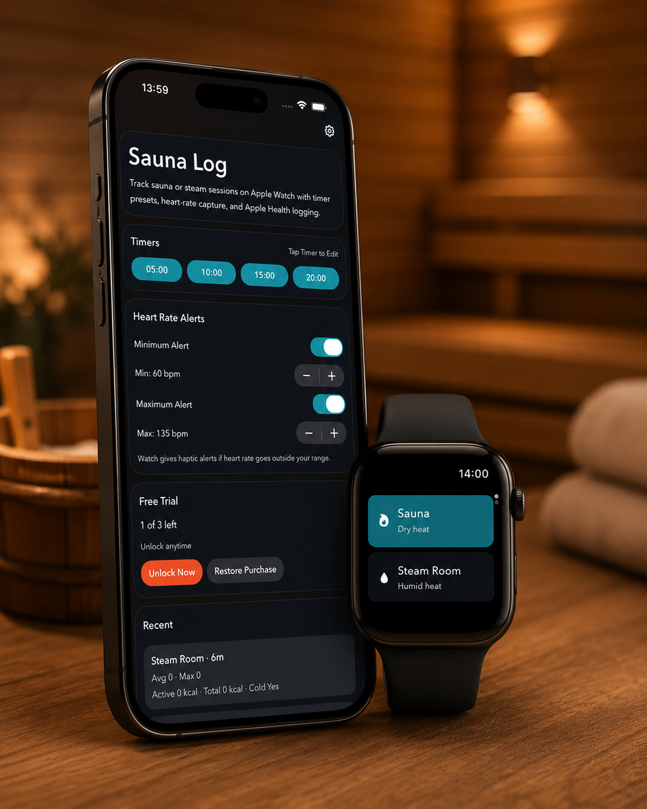

Set it and step in.
Choose sauna or steam room, select a remembered timer, and start from your wrist. The session is designed to keep its timing when the display goes dark.
Sauna Log turns every heat session into a clear, useful record, right from your Apple Watch. Set the timer, follow your heart rate, and build a picture of your progress over time.
Free to try for three sessions. Unlock once, use without limits.

Sauna Log keeps the important parts simple while giving your sessions enough context to become useful over time.
Choose sauna or steam room, select a remembered timer, and start from your wrist. The session is designed to keep its timing when the display goes dark.
See live heart rate, active and total calories, and optional minimum or maximum heart-rate alerts with Watch haptics and notifications when enabled.
Review your sessions on iPhone with heat per active day, duration trends, sauna and steam mix, and personalised insights.
The Watch experience is deliberately focused: choose your heat, choose your time, slide to start. During the session, the essentials stay close at hand, with additional controls available by scrolling when needed.
See the Watch flow“Your heart rate is building.” Personal guidance based on this session and your recent same-type sessions.
Switch between week, month and year views. Swipe back through earlier windows and see how often you use heat, how long you stay, and how your sessions are changing.
Explore InsightsClear answers for people deciding whether Sauna Log is right for their sauna routine.
Yes. Sauna Log is designed to run the timer and session tracking from Apple Watch, with the iPhone app used for settings, history, purchases and insights.
Yes. Choose Sauna or Steam Room before starting. Each heat type can remember its own temperature and humidity defaults, and you can record conditions in Celsius or Fahrenheit.
Yes. Choose your preferred temperature unit in the iPhone app and the setting updates on Apple Watch and in session history.
Sauna Log is available in English, German, Finnish, Swedish, Japanese, Norwegian, Danish and Dutch.
Start Sauna Log on Apple Watch, choose Sauna, select a timer and slide to start. During the session, the Watch can show active and total calories when they are provided by Apple Health or Apple Watch, and the saved record keeps those values.
Apple Watch does not provide a dedicated sauna workout type. Sauna Log is designed specifically for sauna and steam room sessions and uses HealthKit for eligible workout and heart-rate data; Apple may display the workout under a generic category.
Open Sauna Log on Apple Watch, tap Sauna, choose one of your timer presets and slide to start. The session continues with background timing, live heart rate and calorie tracking, then syncs to iPhone when available.
With permission, Sauna Log writes eligible workout and heart-rate data through HealthKit. The selected heat type is stored in Sauna Log metadata; Apple may display the workout under its generic category.
Yes. The Watch app is designed to operate during a session without your phone nearby, then sync the completed record when the devices reconnect.
Sauna Log requires iPhone and Apple Watch. Record three completed sessions free, then unlock unlimited use with one in-app purchase.